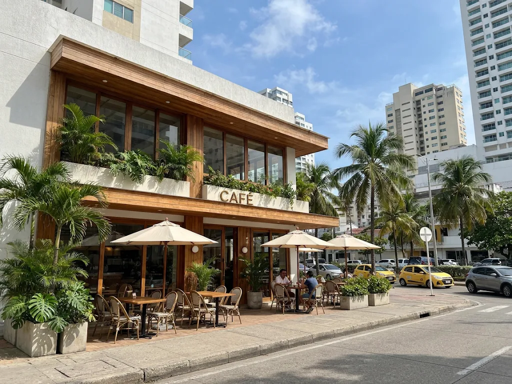
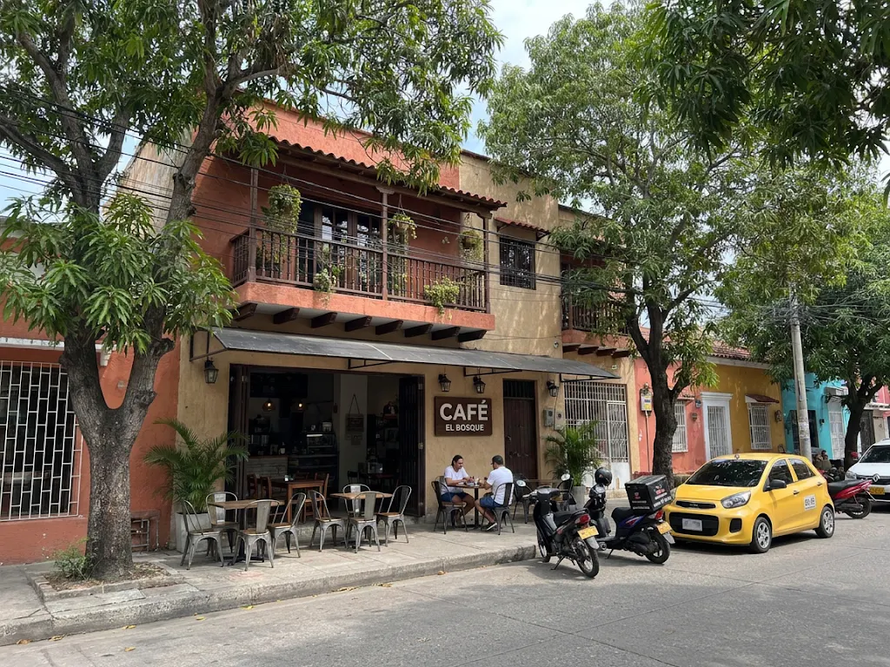
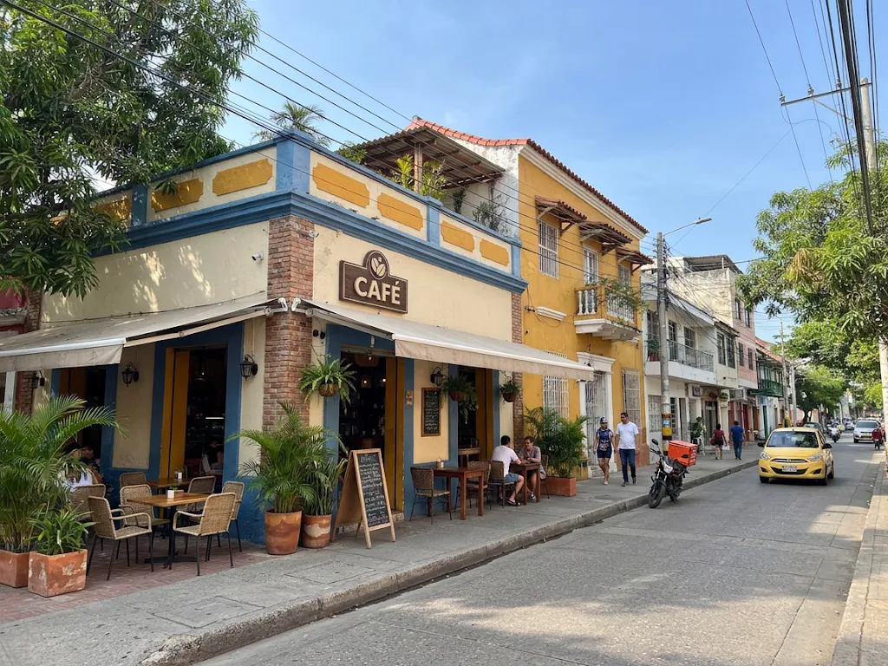

Nuestras sedes
Café Altiplano tiene tres sedes en Cartagena de Indias. Elige la más cercana a ti y ven a probar nuestro café.
Sede Bocagrande

Una sede con terraza abierta, ideal para disfrutar un café frío con la brisa del mar.
- Dirección
- Avenida San Martín # 7-45, Bocagrande
- Horario
- Lunes a domingo, de 7:00 a. m. a 10:00 p. m.
Sede El Bosque

Un espacio amplio y tranquilo, perfecto para reuniones de trabajo o encuentros con amigos.
- Dirección
- Diagonal 21 # 52-18, El Bosque
- Horario
- Lunes a viernes, de 6:30 a. m. a 9:00 p. m.
- Sábados y domingos, de 8:00 a. m. a 9:00 p. m.
Sede Santa Lucía

Nuestra sede más acogedora, con ambiente de barrio y una barra donde puedes ver cómo preparamos tu bebida.
- Dirección
- Calle 31 # 45-22, Santa Lucía
- Horario
- Lunes a sábado, de 7:00 a. m. a 8:00 p. m.
- Domingos, de 9:00 a. m. a 6:00 p. m.